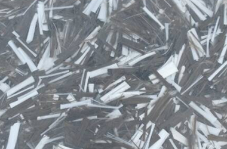

|  | Базальтовое фиброволокно - лучший продукт для армирования материалов, подвергающихся нагреву, поскольку имеет температуру плавления свыше 1000 градусов по цельсию. Стеклофибра - это лучшая армирующая добавка для штукатурок, шпатлевок, материалов на основе гипса. Композитная смесь стекловолокна и базальтового волокна - лучшее предложение на рынке для оштукатуривания печей, каминов и других изделий, подвергающихся температурному воздействию. |
| ПОСТАВЛЯЕТСЯ В УПАКОВКАХ ПО 600 РАСХОД: 1 УПАКОВКА В РАСЧЕТЕ НА 1 КУБ БЕТОНА |
НЕТ В НАЛИЧИИ |